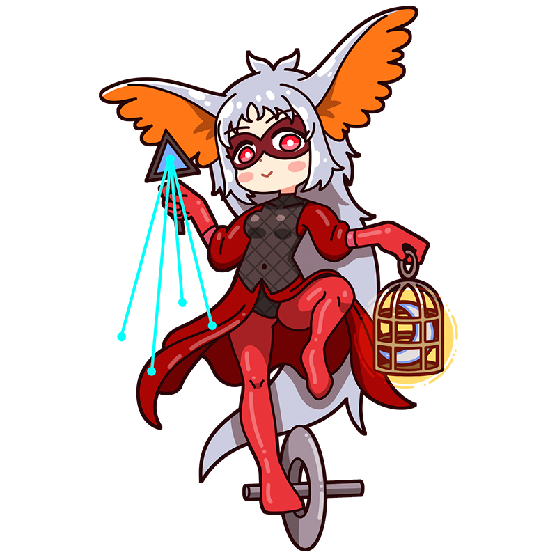

闇夜より光芒が滴下するわ。
遺漏なく掬い上げないとね。
バロ
あやしく輝く月の光は
謎めく世界への道しるべ
スペインで生まれメキシコで没した、シュルレアリスムのミューズ。月の光をエネルギーに怪しげで神秘的な呪術を操る魔術師。自らの作品のように難解で複雑な言葉を使い、周囲を振り回している。
様式
シュルレアリスム
出身国
スペイン
代表作
"鳥の創造"
"螺旋の回廊"
"大地のマントを刺繍する" etc.
バロといえばこの一枚！
鳥の創造
羽毛をまとった(おそらく)女性が絵を描いている。星灯りを原料とする絵の具で描かれた鳥は紙を抜け出し、再び星空に飛び立っていく。バロは親友の画家レオノーラ・キャリントンとともにオカルトを研究しており、作品中でも錬金術や魔術を匂わせるモチーフが散りばめられ、この上ない神秘性を醸し出している。
制作年
1957年
技法・材質
油彩、合板
寸法
54 cm x 64 cm
所蔵
メキシコ近代美術館(メキシコ)
バロってどんな芸術家？
レメディオス・バロ
スペイン出身のシュルレアリスムの画家で、幻想的かつ神秘的な作風により、フランスやメキシコでも活躍した。錬金術や科学をモチーフとした独自の世界観は、ファンタジックでありながら知性をも感じさせる。一方で、生活が苦しい時期にはポスターやカレンダーなどの商業作品も手がけるなど、現実的な一面も併せ持っていた。恋多き人物としても知られ、その関係をめぐって芸術家同士が取っ組み合いの騒ぎを起こしたという逸話も残されている。
フルネーム
María de los Remedios Alicia Rodriga Varo y Uranga
誕生
1908年12月16日
死没
1963年10月8日(54歳没)